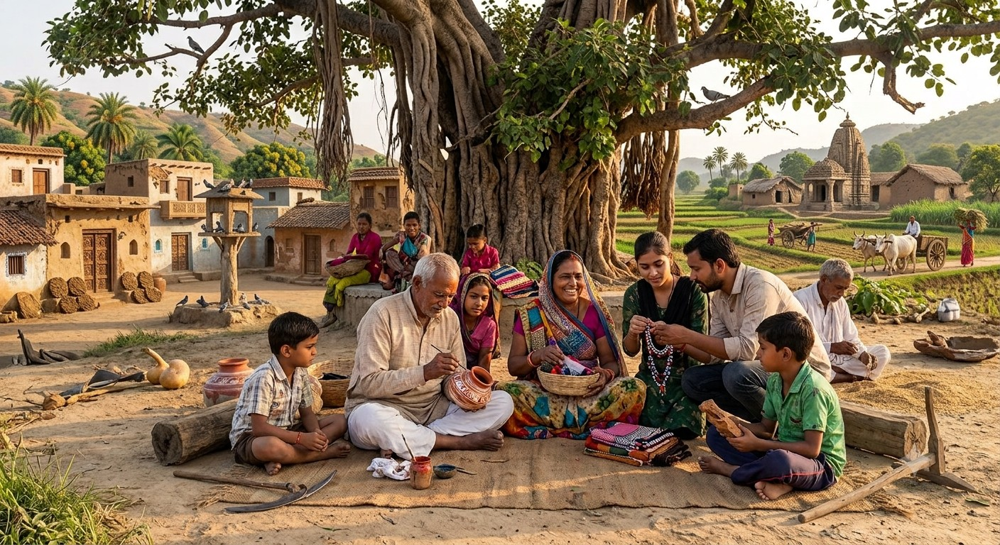
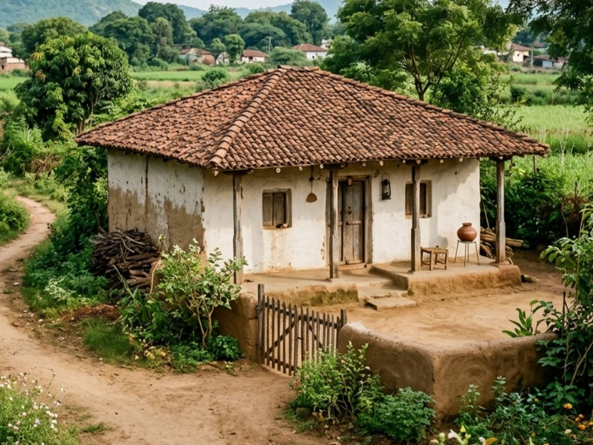
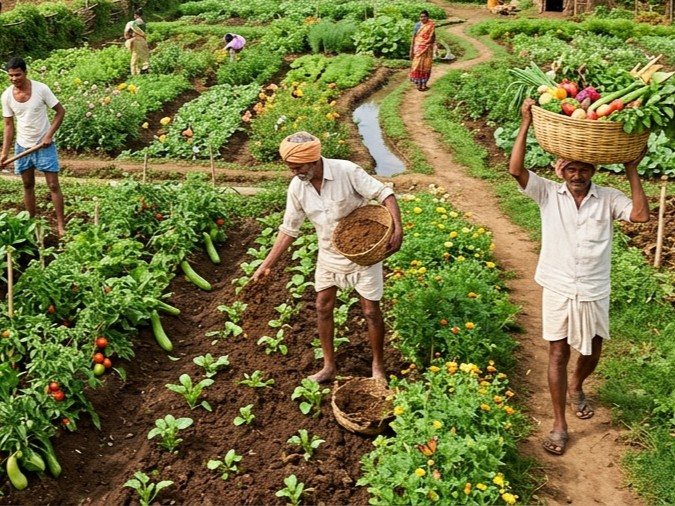
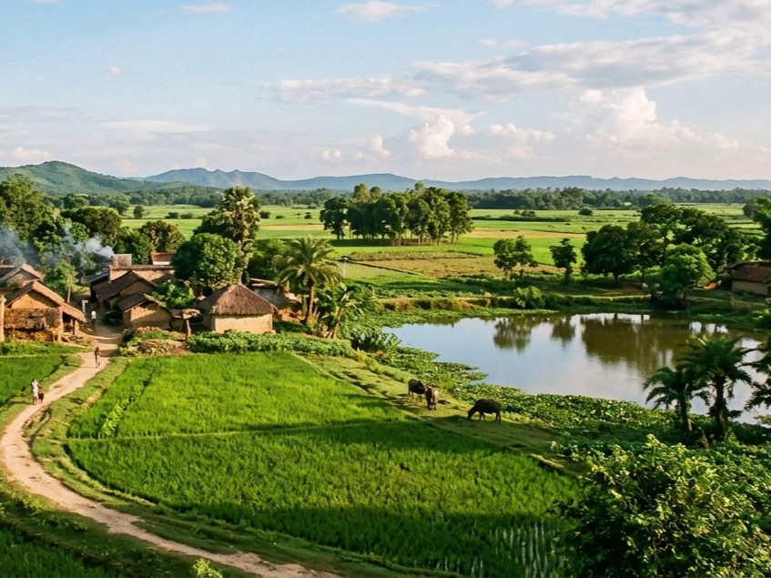

Step Away from the Noise. Step into Village Life.

Every stay, tour, and meal directly benefits the local families, artisans, and farmers who host you.

Real homes, real conversations, and timeless traditions.

Traditional architecture, organic farming and local arts, to keep cultural roots vibrant.

Low-impact, sustainable living through farm-to-table dining and deep respect for nature.
आस-पास के गांवों के बारे में जानकारी प्राप्त करें।
हर ठहरने, भ्रमण और भोजन से सीधे तौर पर उन स्थानीय परिवारों, कारीगरों और किसानों को लाभ होता है जो आपकी मेजबानी करते हैं।
असली घर, असली बातचीत और शाश्वत परंपराएं।
सांस्कृतिक जड़ों को जीवंत बनाए रखने के लिए पारंपरिक वास्तुकला, जैविक खेती और स्थानीय कलाओं का उपयोग किया जाता है।
फार्म-टू-टेबल भोजन और प्रकृति के प्रति गहरे सम्मान के माध्यम से कम प्रभाव वाला, टिकाऊ जीवन।